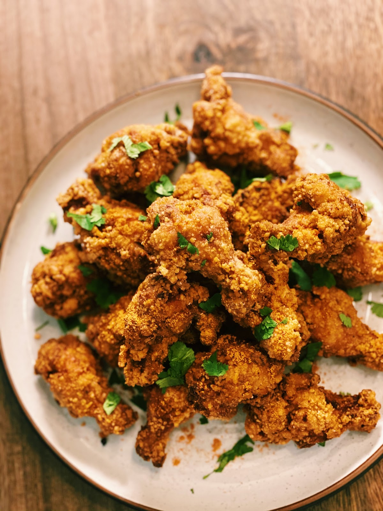

Taiwanese Fried Chicken

EXTRA CRISPY Taiwanese Fried Chicken
Taiwanese Fried Chicken is a recipe that will guarantee flavourful and crispy chicken EVERY SINGLE TIME!! EXTRA Crispy chicken marinated with garlic, five-spice powder, and soy sauce… this is the fried chicken recipe you need in your life! With my battering and double frying method, the skin is super crispy, while the meat inside still JUICY. Trust me when I say that if you make this for a Holiday Dinner Party, your guest will be asking for your secret crepe once you serve it!
Ingredients
- 1.5 lb of mini Chicken Drumsticks
- 1.5 tbsp of Soy Sauce
- 1 tbsp of Sugar
- 5 cloves of minced Garlic
- 1 tbsp of Five Spice Powder
- 1 tbsp of Chinese Cooking Wine
- 1 tsp of White Pepper
- 2 tbsp of Corn Starch
- 1 Egg
- 2 cups of Sweet Potato Flour
Seasoning
- 1 tsp of Paprika
- 1 tsp of Five Spice Powder
- 5 tsp of Sugar
- 1 tsp of White Pepper
- 1 tsp of Salt
- 1 tsp of Chilli Powder
Steps
- Marinate the chicken with soy sauce, sugar, garlic, and Chinese cooking wine for 20 minutes.
- After 20 minutes, add in 1 egg and 2 tbsp of corn starch. Mix together, ensuring that every piece of chicken is coated in the batter.
- Coat the chicken with sweet potato flour and set aside for 5 minutes.
- Turn the heat up to medium-high and heat oil in a pan. Once the oil is hot, add chicken and fry for 3-4 minutes or until golden brown and crispy.
- Once all the chicken is fried, turn the heat up to high and double fry the chicken for another 1-2 minutes.
- Immediately sprinkle on seasoning all over the chicken and garnish with cilantro.